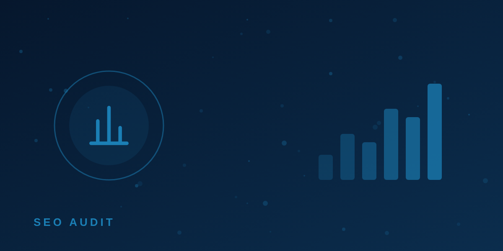
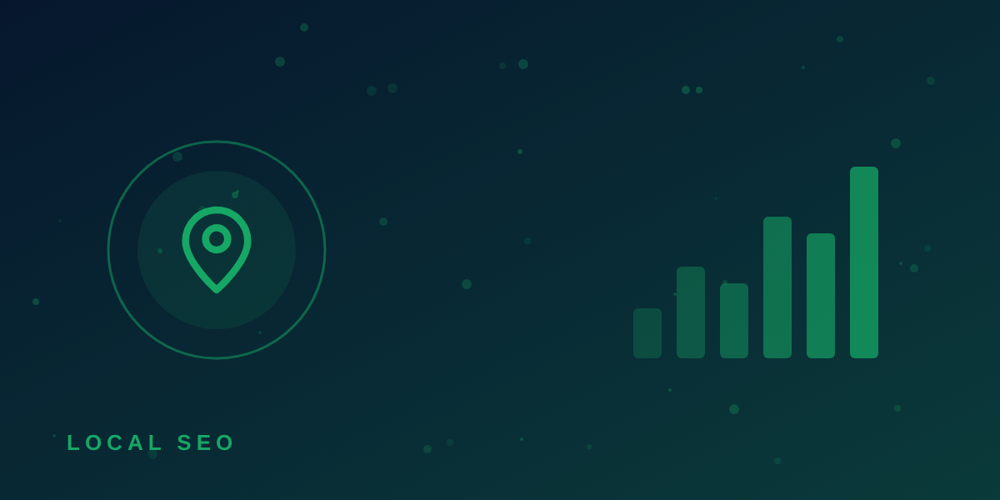
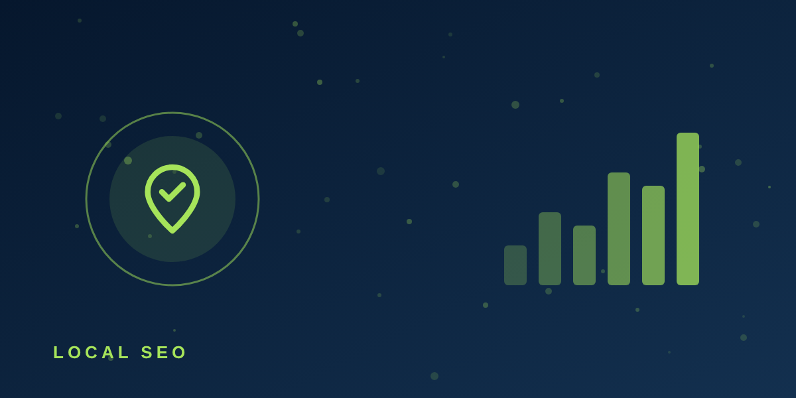
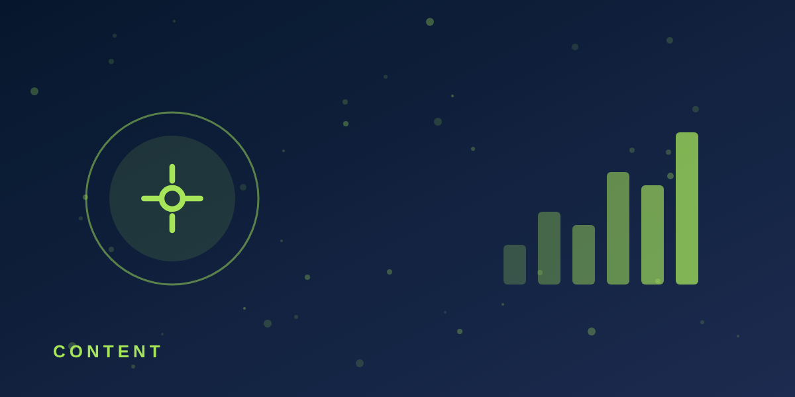
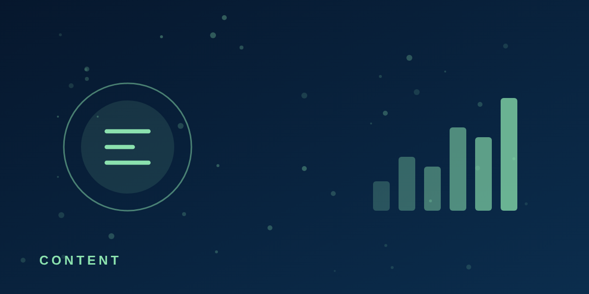

SEO AUDIT
How to Perform an SEO Audit (with Checklist)
A practical walkthrough of technical, content and off-page checks, with a checklist you can follow.
Source: YoastRead article ↗
Hand-picked reading on SEO audits, local search and content strategy.
A practical walkthrough of technical, content and off-page checks, with a checklist you can follow.

A detailed audit process, plus tips for recovering a website after major search updates.

What small businesses should do to be found in their local area, from content to business listings.

A step-by-step approach to building a local search strategy from the ground up.

How pillar pages and supporting content work together to build topical authority.

How matching content to user intent shapes what you publish and how pages link together.
Recommended reading from respected SEO publications. Each article opens in a new tab on its original website; all rights belong to the respective authors.
Tell me about your goals. Let's build a practical growth plan.